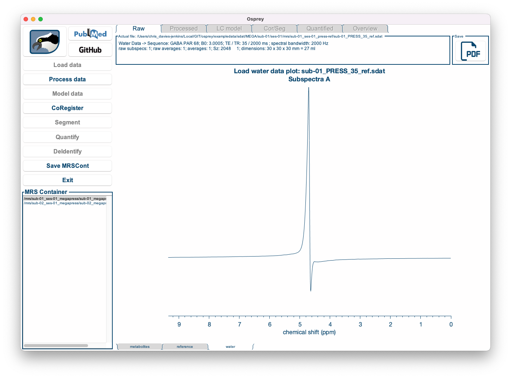

Chapter 5 Osprey GUI tutorial
This tutorial describes each step of the Osprey analysis workflow using the graphical user interface.
We will learn how to start the GUI, select the job file, load the raw data, process them into spectra, model the processed spectra, co-register the voxel to anatomical images, segment the anatomical images, and derive quantitative metabolite estimates.
jobTwix.m job file in the exampledata/twix/ directory of the Osprey repository.
5.1 Starting Osprey
At the MATLAB prompt, enter
>> OspreyThis will initiate the Osprey GUI application and the underlying processing modules. Once the startup is complete, you will see the Osprey startup menu box:
Figure 5.1: The Osprey Startup Menu.
5.2 Loading a job file
Click the Load Job file button, navigate to the exampledata/twix directory, and add the file jobTwix.m to the right column:
Figure 5.2: Selecting a job file.
Click Done. If you have run an Osprey analysis previously with the same output folder specified in the job file, you will be shown a warning:
Figure 5.3: Warning when you are about to overwrite a previous analysis.
Click Yes. Osprey will now extract all necessary information from the job file you selected by running the OspreyJob module in the background. The next window you see is the main GUI:
Figure 5.4: The Osprey GUI after OspreyJob.
In the bottom left corner, you see a list of datasets included in the job file definition.
Load Data, Save MRSCont, and Exit) are greyed out at this stage. They will become gradually available as we progress through the analysis workflow.
5.3 Loading the raw MRS data
Click the Load data button to initiate the loading process of the raw MRS data. Osprey will now extract the raw FIDs and header data (and perform coil combination, if applicable) by running the OspreyLoad module in the background. For larger files (with separate FIDs for each coil), this process may take a few seconds per dataset. You can monitor the progress through the wait bar.
Once the loading process is complete, you can see the coil-combined, but un-aligned and un-averaged data. You can select the dataset you wish to be displayed by clicking on the entry in the dataset list in the bottom left corner, and you can easily scroll through the different datasets using the ⬆ and ⬇ keys on your keyboard.
| First dataset | Second dataset |
|---|---|

|

|
By clicking the metabolites, reference and water tabs at the bottom of the window, you can display the water-suppressed, lineshape reference, and short-TE water data (if applicable):
| Metabolite data | Lineshape reference data | Short-TE water data |
|---|---|---|
|
|

|
 |
Save PDF button in the top right corner of the window.
5.4 Processing the raw data
Click the (now available!) Process data button to initiate the post-processing. Osprey will now perform all appropriate processing steps (depending on the available data: eddy-current correction, frequency-and-phase alignment, water removal, frequency referencing, initial phasing) by running the OspreyProcess module in the background. This process may take several seconds per dataset. You can monitor the progress through the wait bar.
Once the post-processing is complete, the Processed tab becomes active, showing four different panels:

Figure 5.5: The Osprey GUI after OspreyProcess.
The top left panel shows the individual averages prior to frequency-and-phase alignment. The bottom left panel shows them after frequency-and-phase alignment.
The top right panel shows a scatter plot of the maximum of the 3.02 ppm Cr/PCr signal over the course of the acquisition for both pre- and post-alignment. Finally, the bottom right panel shows the aligned, averaged and referenced spectrum after eddy-current correction and residual water removal. This spectrum will be passed on to the Fit module for modeling.

Figure 5.6: Different sub-spectra can be visualized by cycling through the “Spec” windows.
Individual sub-spectra, and combinations thereof, can be visualized by cycling through the “spec” arrows at the top left of the screen.
Raw tab at the top of the window.
Again, you can display each dataset by selecting it from the dataset list in the bottom left corner, and you can look at the water reference data by clicking on the tabs at the bottom of the window.
Save PDF button in the top right corner of the window.
5.5 Fitting the spectra
Click the (now available!) Fit data button to initiate the post-processing. Osprey will now model the processed metabolite and water spectra by running the OspreyFit module in the background. This process may take a few seconds, or up to a minute or more per dataset, depending on the complexity of the data and model. You can monitor the progress through the wait bar.
Once the modeling is complete, the Fit tab becomes active:
Figure 5.7: The Osprey GUI after OspreyFit.
The Fit tab displays the complete fit overlaid on top of the data, along with the smooth cubic B-spline baseline, and the fit residual at the top.
Below, the contributions from each basis functions are plotted, with the estimated lineshape convolution, linebroadening and frequency shift parameters applied. For better display, the phase parameters have been applied to the spectrum, so that the basis functions appear without phase.
The left panel shows the raw water-scaled metabolite estimates, i.e. the signal amplitudes normalized by the water amplitude. The amplitude parameters will subsequently be used during the quantification process to derive tCr ratios and water-scaled estimates.
Raw or Processed tabs at the top of the window.
Again, you can display each dataset by selecting it from the dataset list in the bottom left corner, and you can look at the water reference data fits by clicking on the tabs at the bottom of the window.
Save PDF button in the top right corner of the window.
5.6 Co-registering to an anatomical image
Click the CoRegister button to initiate the SPM routines for co-registering a voxel to a T1-weighted anatomical image. Osprey will now parse the voxel geometry information and create the voxel mask by running the OspreyCoReg module in the background. This process will take a few seconds per dataset. You can monitor the progress through the wait bar.
Process and Fit steps of the analysis. The CoRegister button becomes available after the Load data analysis step has been completed.
Once the co-registration is complete, the Cor/Seg tab becomes active:
Figure 5.8: The Osprey GUI after OspreyCoReg.
You can see an overlay of the voxel mask on top of the anatomical image in three directions.
Save PDF button in the top right corner of the window.
Nii Viewer button in the top left corner of the window opens the current paricipant’s structural image in an external NIfTI viewer for closer inspection.
5.7 Segmentation and tissue fraction calculation
Click the Segment button to initiate the determination of the tissue volume fractions for the co-registered voxel. Osprey will now call the SPM12 segmentation functions and calculate the fractions of grey matter, white matter, and cerebrospinal fluid by running the OspreySeg module in the background. If you have previously segmented the images, this step will only take a few seconds. However, if Osprey has to initiate the segmentation first, it can take up to several minutes per dataset. You can monitor the progress through the wait bar.
Process and Fit steps of the analysis. The Segment button becomes available after the Load data and CoRegister analysis steps have been completed.
Once the segmentation is complete, the Cor/Seg tab features another figure:
Figure 5.9: The Osprey GUI after OspreySeg.
Below the overlay produced by CoRegister, you can now see four images showing the voxel mask next to the contributions from grey matter, white matter, and CSF, along with the fractional volume estimates for each tissue class. These values will subsequently be used during quantification to account for tissue-specific effects of relaxation, tissue water content, and metabolite content.
Save PDF button in the top right corner of the window.
5.8 Quantification
Click the Quantify button to have Osprey run the OspreyQuantify module in the background. This should take less than a second per dataset. During this process, several quantitative metabolite estimates are calculated, such as tCr ratios and water-scaled estimates with different degrees of sophistication. Please refer to the Osprey manuscript for details on the implementation of these quantification routines.
Once the quantification is complete, the Quantify tab becomes active:

Figure 5.10: The Osprey GUI after OspreyQuantify.
This tab contains a bare-bone table of the quantitative results for each basis function and each quantification routine for the selected dataset. These numbers are saved in .CSV format tables in the QuantifyResults sub-directory of the output folder.
At this stage, all analysis steps have been completed. You can save the current state of the analysis by exporting it the Osprey data container as a .mat file using the Save MRSCont button. You can re-load it at any time using the Load MRSCont file button in the Osprey startup menu (see Step 1 of this tutorial).
5.9 Overview
After quantification is complete, another tab becomes active: Overview. This tab contains several visualizations that are interesting for the batched analysis of multiple datasets.
By clicking on the tabs at the bottom of the window, you can cycle through the following visualizations:
- Spectra: Displays all processed spectra (or fits) on top of each other in a single plot.
Figure 5.11: The Overview Spectra tab in the Osprey GUI.
- Mean spectra: Displays the mean of spectra (or fits) across all datasets, along with the mean baseline, mean residual, and a ribbon plot representing the standard deviation across all spectra.

Figure 5.12: The Overview Mean Spectra tab in the Osprey GUI.
- Mean spectra: Displays the mean of spectra (or fits) across all datasets, along with the mean baseline, mean residual, and a ribbon plot representing the standard deviation across all spectra.
- Quantify table: Shows a table with the results of a specific quantification routine for all metabolites and all datasets.

Figure 5.13: The Overview Quantify Table tab in the Osprey GUI.
- Distribution: Shows a raincloud plot of the results of a specific quantification routine for a specific metabolite. The raincloud plot includes a visualization of the distribution, the mean and median values of the distribution, standard deviation, and 25% and 75% percentiles. In addition, each data point is shown.
By default, the Distribution tab is set to display the tCr ratios of tNAA.
Figure 5.14: The Overview Distribution tab in the Osprey GUI.
- Correlation: Shows a highly customizable 2D scatter plot of a quantitative metabolite estimate against another quantitative metabolite estimate, or a quality metric. Osprey automatically calculates the Pearson correlation coefficient and a p-value (uncorrected for multiple comparisons), and plots the linear regression line with shaded confidence intervals.
By default, the Correlation tab is set to display the correlation of tNAA/tCr to SNR.
Figure 5.15: The Overview Correlation tab in the Osprey GUI.
We are incredibly grateful for the fantastic raincloud plot tools developed by Micah Allen, Davide Poggiali, Kirstie Whitaker, Tom Rhys Marshall, and Rogier Kievit. Should you make use of the OspreyOverview raincloud plots, please consider citing their original publications:
> * Allen M, Poggiali D, Whitaker K et al. Raincloud plots: a multi-platform tool for robust data
> visualization [version 1; peer review: 2 approved].
> Wellcome Open Res 2019, 4:63. DOI: 10.12688/wellcomeopenres.15191.1
> * Allen M, Poggiali D, Whitaker K, Marshall TR, Kievit R. (2018) RainCloudPlots tutorials and codebase (Version v1.1). Zenodo. http://doi.org/10.5281/zenodo.3368186